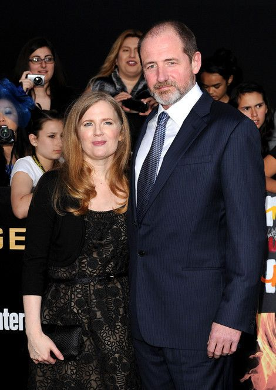

Random Facts About Suzanne Collins
Suzanne Collins comes from a military family. Her father served in Vietnam when she was a child and he went on to make lieutenant colonel, her grandfather was gassed in World War I and her uncle was injured in World War II.
She is married to an actor called Cap Pryor, as seen below.
She worked for Nickleodeon on several shows, including: Clarissa Explains It All and The Mystery Files of Shelby Woo.
Suzanne Collins was 38 when she started to write Gregor the Overlander. Her debut book.
Awards
2013 Kids Choice
2012 Teen Choice
2010 Hal Clement
2009 Goodreads Choice
2009 Hal Clement